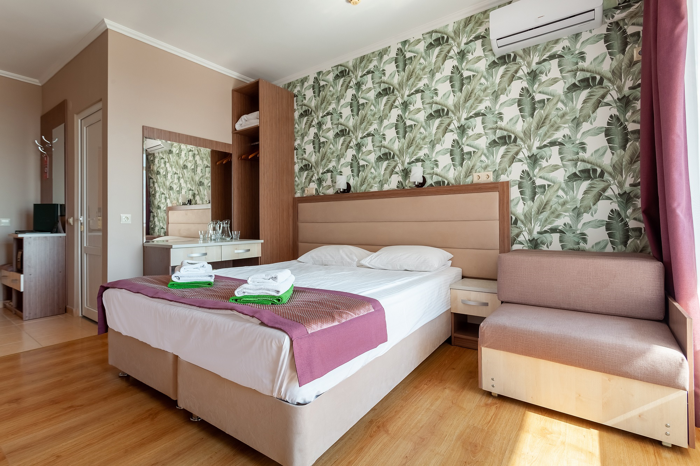
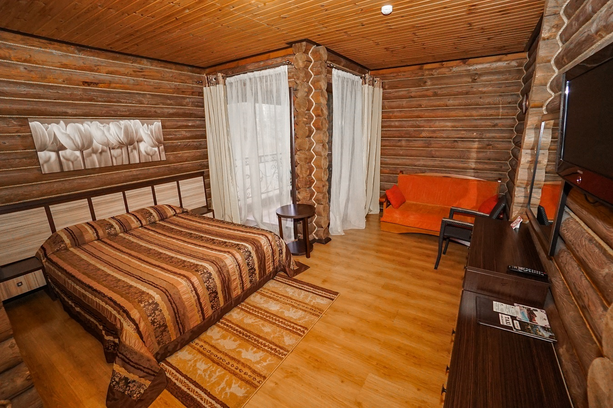
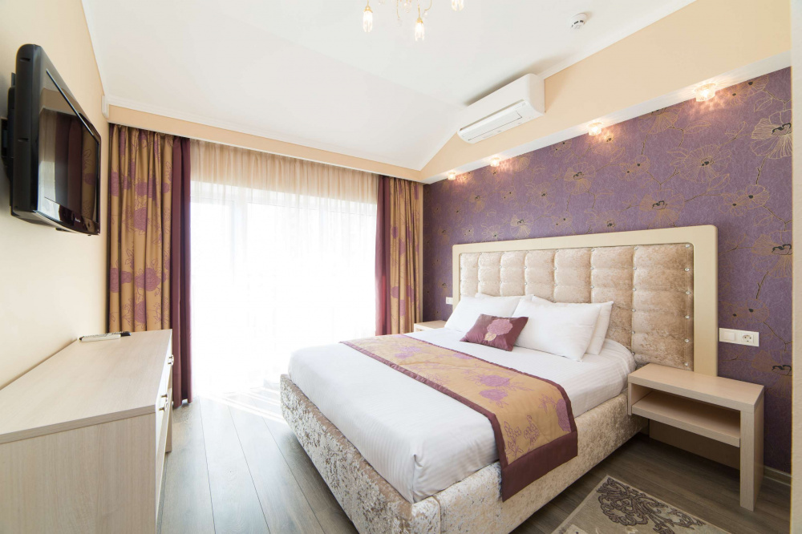
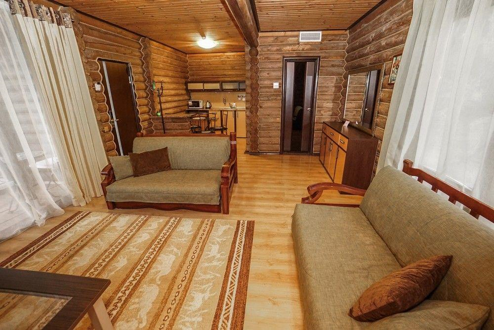

Стандарт
Однокомнатный номер площадью 18 кв.м., рассчитанный на два основных места.
В комнате предусмотрено наличие либо одной двуспальной, либо двух односпальных кроватей. Имеется дополнительное место
(кресло-кровать), которое оплачивается отдельно, в зависимости от сезона и тарифа.
Максимальное количество гостей в номере составляет 3 человека. Проживание детей до 5 лет бесплатно.

Евростандарт
Улучшенный номер 21 кв.м., с условным зонированием места для отдыха и спальни. Стены, украшенные картинами, и мягкие
прикроватные коврики дополняют атмосферу древесного уюта.
Максимальное количество гостей в номере составляет 4 человека (2 основных места и 2 дополнительных (диван-кровать)).
Доп.место оплачивается отдельно, в зависимости от сезона и тарифа.

Люкс
Светлый двухкомнатный номер класса люкс площадью 40 кв.м. с гостиной и спальней.
Вместимость: 5 человек (2 основных места и 3 доп.места на диван-кровати и диване).
Доп.места оплачиваются отдельно в зависимости от сезона и тарифа. Проживание детей до 5 лет бесплатно.
Оборудован всем необходимым для комфортного отдыха, также имеет удобное зонирование.

Семейный
Название номера говорит само за себя. Трехкомнатный номер 51 кв.м.: большая гостиная со встроенной кухней, спальня и комната
с диваном – кроватью позволит разместиться всей семье.
Вместимость: 6 человек (3 основных места и 3 доп.места).
Доп.места оплачиваются отдельно в зависимости от сезона и тарифа.
Номер оборудован всем необходимым для комфортного отдыха.